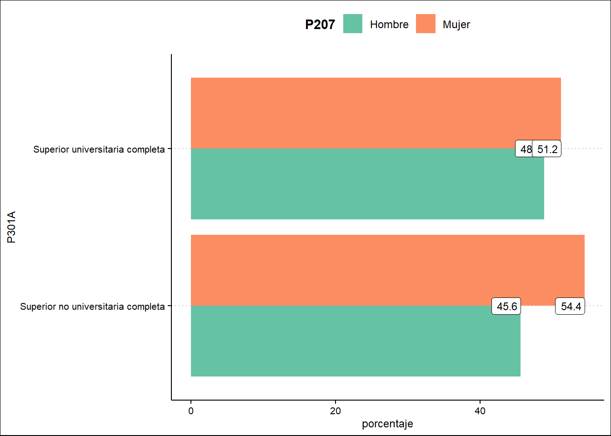
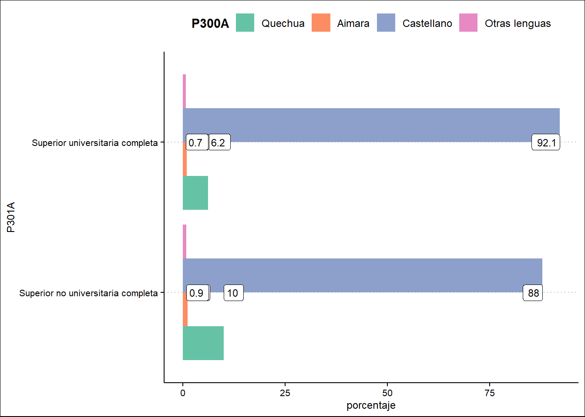
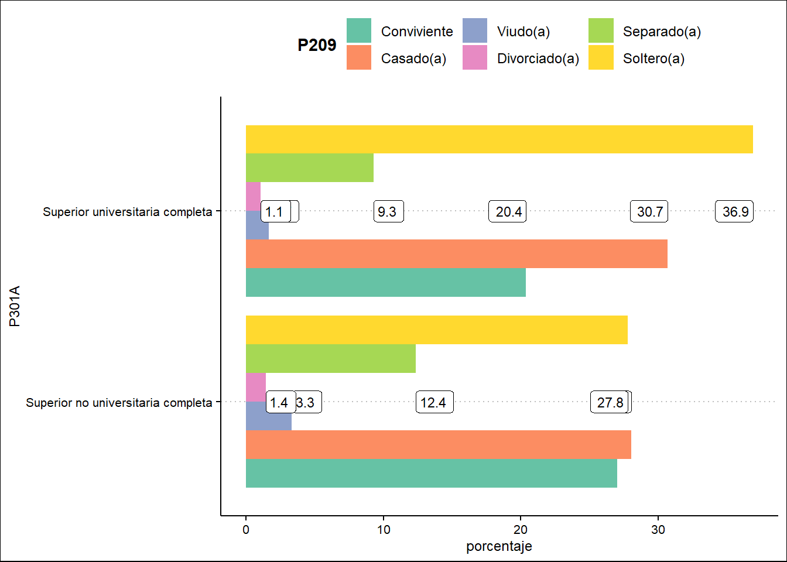

Mostrar código
library(haven)
library(tidyverse)Leanna Sofía de los Ángeles Zúñiga Montaño
De acuerdo a la Ley Geneneral de Educación, ésta es un proceso de aprendizaje y enseñanza que se desarrolla durante toda la vida; asimismo, que contribuye en la formación integral de la persona, en el desarrollo de potencialidades, creación cultural y al desarrollo de la familia, del país y de la comunidad mundial.
Respecto a la educación superior, la norma describe que ésta se orienta a la investigación, creación y difusión de conocimientos, así como al logro de competencias profesionales de alto nivel en función a la demanda y necesidad de desarrollo sostenible del país.
De acuerdo a especialistas en la materia (Cuenca, 2015), el proceso peruano de expansión univesitaria fue una decisión del Estado en la década de 1990 para liberalizar el mercado educativo y, con ello, permitir una actividad lucrativa que atraiga inversión privada para atender la creciente demanda de servicios educativos superiores.
Entre las hipótesis que sustentaron la liberalización del mercado educativo se encuentran: i) La participación privada ampliaría la oferta y cobertura universitaria; ii) considerando la primera hipótesis, el acceso a estudios superiores universitarios se democratizaría y iii) la competencia del mercado regularía y expulsaría a universidades de mala calidad (Cuenta, 2015:11)
Sobre la primera hipótesis, Cuenca indica que hubo un crecimiento de la matrícula y que éste se debió a los cambios en los porcentajes de representación de la matrícula privada entre 1995 y 2012. Sin embargo, los resultados respecto a la segunda y tercera hipótesis no fueron correctos. Así, se identificó que la universidad se constituía como proyecto para jóvenes pertenecientes a quintiles de mayor ingreso económico y, con ello, que la oferta universitaria creció sin regulación de calidad (Cuenta, 2015:12)
Ahora, en cuanto a la Educación técnica, la Ley General de Educación establece que es una educación técnica-productiva orientada a la adquisición de competencias laborales y empresariales alineada a una perspectiva de desarrollo sostenible y competitivo.Asimismo, que busca mejorar el nivel de empleabilidad y desarrollo de la persona, sobre todo de aquella con interés en una inserción o reinserción en el mercado laboral.
Al respecto, en el 2011 Encinas manifestaba que la formación educativa impartida en centros de educación técnico productiva y institutos superiores tecnológicos adolecian de la ausencia de articulación con el mercado y de otras dificultades vinculadas al desarrollo de conocimientos con enfoque de competencias y brechas vinculadas al acceso de mujeres (sobre todo en zonas rurales) (Encinas, 2011:13-14)
Por lo expuesto, la presente investigación busca responder a la pregunta ¿Cómo está caracterizada la población que declara alcanzar un nivel educativo técnico o superior en el Perú? Para ello, el trabajo se centrará en identificar características puntuales como nivel educativo, sexo, idioma/lengua y estado civil. Al respecto, resulta necesario indicar que la investigación tiene un sentido exploratorio puesto que el tiempo y manejo de las herramientas metodológicas no permiten problematizar los resultados obtenidos.
Con el objetivo de emplear bases de datos, se utilizaron dos paquetes: haven y la colección de paquetes tidyverse. El primer paquete permite la lectura de data que contiene archivos con extensión .csv, que pertenecen al formato Excel; mientras que el segundo paquete nos permite desarrollar una limpieza de datos, además de ejecutar funciones que ayudan con la organización, el filtrado y la selección de variables relevantes. Otro aporte de este segundo paquete es que permite presentar la información extraída de la data a través de gráficos que pueden ser creados con la función ggplot.
library(haven)
library(tidyverse)Este proyecto empleó la base de datos de la “Encuesta Nacional de Hogares (ENAHO) 2021, realizada por el Instituto Nacional de Estadística e Informática (INEI) en el 2021 y que se encuentra disponible para descarga en el enlace http://iinei.inei.gob.pe/microdatos/.
De acuerdo a la ficha técnica de la encuesta (2021),entre los objetivos se encuentra el generar indicadores que permitan conocer la evolución de la pobreza, bienestar, así como las condiciones de vida de los hogares. En ese sentido, la encuesta se realizó en los veinticuatro departamentos del país y en la Provincia Constitucional del Callao, cubrinedo el área urbano y rural.
A continuación se realizará una descripción de los conjuntos de datos ejecutados en relación a las preguntas planteadas:
Sobre esta encuesta, iniciamos con la revisión de la base de datos para identidicar qué módulos serán utilizados, de acuerdo a los capítulos de interés. Al respecto, se usará principalmente variables del Módulo 300, que brindan información sobre el ámbito educación. Asimismo, a fin de poder dar respuesta a las preguntas secundarias, también se usarán el Capítulo 200, que presenta información sobre sexo, idioma y estado civil.
Posterior a ello, realizamos la descarga, guardado de los módulos de interés y la lectura de los mismos a través de la función read_sav().
E_Educacion <- read_sav("data/Enaho01A-2021-300.sav")%>%
as_factor() %>%
mutate(
P300A = fct_lump_n(P300A, n=3, other_level = "Otras lenguas")
)A partir de la lectura de los módulos de la base de datos y la obtención del valor de las etiquetas, procedimos a explorar la data e identificar la información más relevante en consonancia con el tema central. Al respecto, identificamos nuestras variables principales:
Sobre características de los residentes del hogar: CONGLOMERADO, VIVIENDA, HOGAR, CODPERSO. Estas variables permiten identificar a la persona encuestada. Adicional a ellas, también se empleó la P207 vinculada al sexo de la persona. Sobre educación: P301A, que responde a la pregunta ¿Cuál es el último año o grado de estudios y nivel que aprobó?. Sobre esta variable, es importante mencionar que brinda doce opciones de respuesta; entre ellas considera superior no universitaria completa y superior universitaria completa.
Las variables identificadas permitirán responder a las siguientes preguntas:
Pregunta central
Preguntas secundarias
Entre el nivel educativo técnico y superior ¿Cuál es el que prevalece entre la población del Perú ?
¿Cuál es el sexo que prevalence en la población que declara tener un nivel educativo técnico o superior en el Perú?
¿Cuál es el idioma que prevalence en la población que declara tener un nivel educativo técnico o superior en el Perú?
¿Cuál es el idioma o lengua que prevalence en la población que declara tener un nivel educativo técnico o superior en el Perú?
En esta sección se presentan los códigos empleados para la obtención de la data que será usada en el análisis de resultados. La data obtenida se encuentra en recuentos y porcentajes.
El siguiente bloque de código permite identificar, dentro del Módulo Educación, el idioma o lengua materna. Para ello, se emplea la variable P300A y se especifica que sean visibles los tres valores más representativos. Esta información se almacena en el objeto denominado E_Educacion.
Posteriormente, el siguiente bloque de código permite identificar el grupo poblacional que declara tener un nivel educativo superior no universitaria completo o superior universitaria completo a través de la variable P301A. Asimismo, agrupa a esta población por sexo empleando la variable P207. Esta información se almacena en el objeto denominado tecnico_superior.
tecnico_superior <- E_Educacion %>%
group_by(P301A,P207) %>%
filter(P301A %in% c("Superior no universitaria completa","Superior universitaria completa" ))%>%
summarise(recuento = n()) %>%
mutate(porcentaje = recuento/sum(recuento)*100) %>%
ungroup()Una vez creadas las datas frames indicadas anteriormente, iniciamos con la creación de la función que nos permitirá analizar la data. Para ello, identificamos qué tipo de información queremos obtener.En este caso, queremos agrupar la data en una variable que nos permita identificar la población que precisa tener un nivel educativo superior no universitario completo o superior universitario completo; a partir de ello, buscamos correlacionar esta variable con otras vinculadas a sexo, condición de ocupación y condición de pobreza. Una vez obtenida esta información se graficarán los resultados.
La función obtenida se denomina graficar_nivel_edu y se detalla a continuación:
graficar_nivel_edu <- function(mi_variable){
tecnico_superior <- E_Educacion %>%
group_by(P301A, {{ mi_variable }}) %>%
filter(P301A %in% c(
"Superior no universitaria completa",
"Superior universitaria completa"
)) %>%
summarise(recuento = n()) %>%
mutate(porcentaje = recuento / sum(recuento) * 100) %>%
ungroup()
tecnico_superior %>%
ggplot(aes(porcentaje, P301A)) +
geom_col(aes(fill = {{ mi_variable }}), position = position_dodge()) +
geom_label(aes(label = round(porcentaje, 1)), position = position_dodge(width = 1))
}El uso de la función se realiza a través del siguiente bloque de código:
graficar_nivel_edu(mi_variable= )Error in is_call(uq_expr, c("after_stat", "after_scale")): argument "uq_expr" is missing, with no defaultComo se observa, la función requiere que el argumento sea delimitado. En ese sentido, el argumento es denominado mi_varibale y será especificado con el nombre de la varible que se quiera emplear.
De acuerdo al gráfico podemos identificar que del total de personas encuestadas que declaran tener un nivel educativo superior no universitario completo o superior universitario completo, la mayoría son mujeres. En el grupo de quienes cuenta con una educación superior no universitaria completa el 54.4% son mujeres; mientras que quienes indican tener superior universitaria completa el 51.2% son mujeres.
graficar_nivel_edu(mi_variable=P207)
De acuerdo al gráfico podemos identificar que del total de personas encuestadas que declaran tener un nivel educativo superior no universitario completo o superior universitario completo, la mayoría declara tener como lengua materna el castellano. En el grupo de quienes cuenta con una educación superior no universitaria completa el 92.1% indica tener como lengua materna el castellano y solo el 2% tener el quechua. Por su parte, quienes indican tener educación superior universitaria completa el 88% tienen el castellano como lengua materna y el 10% al quechua.
graficar_nivel_edu(mi_variable=P300A)
De acuerdo al gráfico podemos identificar que del total de personas encuestadas,aquellas que declaran tener un nivel educativo superior universitario completo indicó ser soltera en su mayoría (36.9%); mientras que quienes indicaron tener un nivel educativo superior no universitario completo precisó ser casada (27.8%)
graficar_nivel_edu(mi_variable=P209)
De acuerdo a la información registrada en la “Encuesta Nacional de Hogares (ENAHO) 2021:
Respecto a la educación superior completa en el Perú, el nivel predominante es el superior no universitario completo con un 52.4% en comparación con el nivel superior universitario completo que representa un 47.6%.
Del total de la población que declaró tener un nivel educativo universitario completo o no universitario completo la mayoría es mujer. Para el primer grupo, la representación alcanza un 51.2%; mientras que en el segundo un 54.4%.
El Castellano es el idioma o lengua predominante tanto en el grupo que indica tener un nivel educativo superior universitario completo como en quienes señalaron un nivel superior no universitario competo. En el caso del Quechua, se ubica como segunda lengua con un 10% y 2%, respectivamente.
Los estados civiles predominantes en la población que declaró tener un nivel educativo universitario completo o no universitario completo es soltero(a) y casado(a). Al respecto, un 36.9% del grupo con nivel educativo universitario completo es solero (a) y un 30.7% es casado(a); mientras que un 27.8% del grupo con nivel educativo no universitario completo es casado(a).
Cuenca R., Ed (2015) La educación universitaria en el Perú: democracia, expansión y desigualdades. Instituto de Estudios Peruanos, Lima. Recuperado de: https://repositorio.iep.org.pe/bitstream/handle/IEP/603/estudiossobredesigualdad10.pdf;jsessionid=7AABF53E21CC33672A917E8F141212FF?sequence=2
Encinas, S.,(2011) Los retos de la educación técnico profesional en el Perú en el siglo XXI. TAREA-Asociación de Publicaciones Educativas, Lima. Recuperado de: http://www.tarea.org.pe/images/Tarea78_12_Encinas_Sara.pdf
Instituto Nacional de Estadística e Informática (2021) “Encuesta Nacional de Hogares (ENAHO) 2021.Recuperado de: http://iinei.inei.gob.pe/microdatos/
Ley General de Educación 28044, de 29 de julio de 2003. Recuperado de: https://cdn.www.gob.pe/uploads/document/file/105107/28044-31-10-2012_11_31_34-LEY_28044.pdf